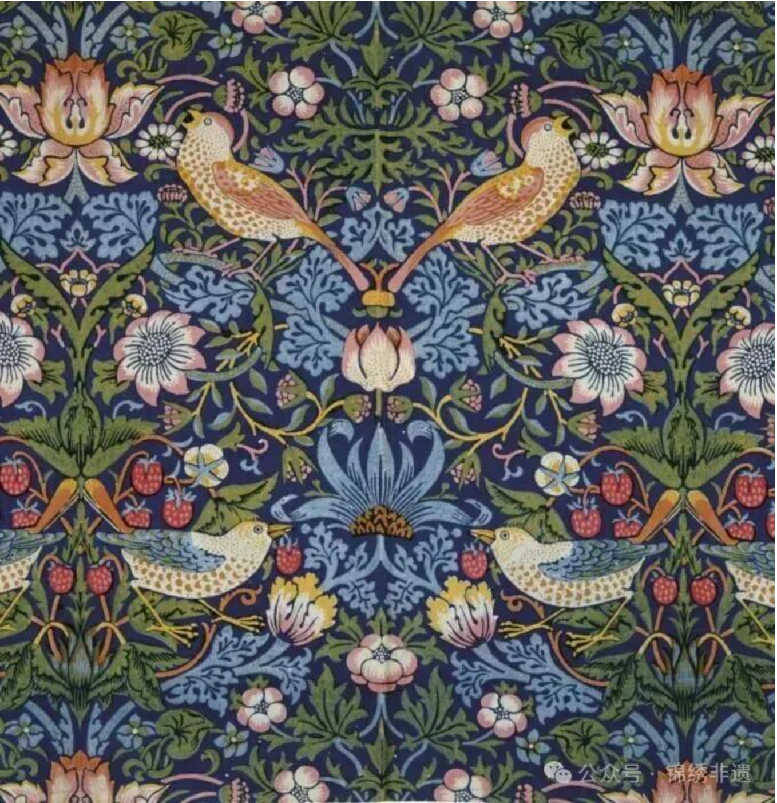
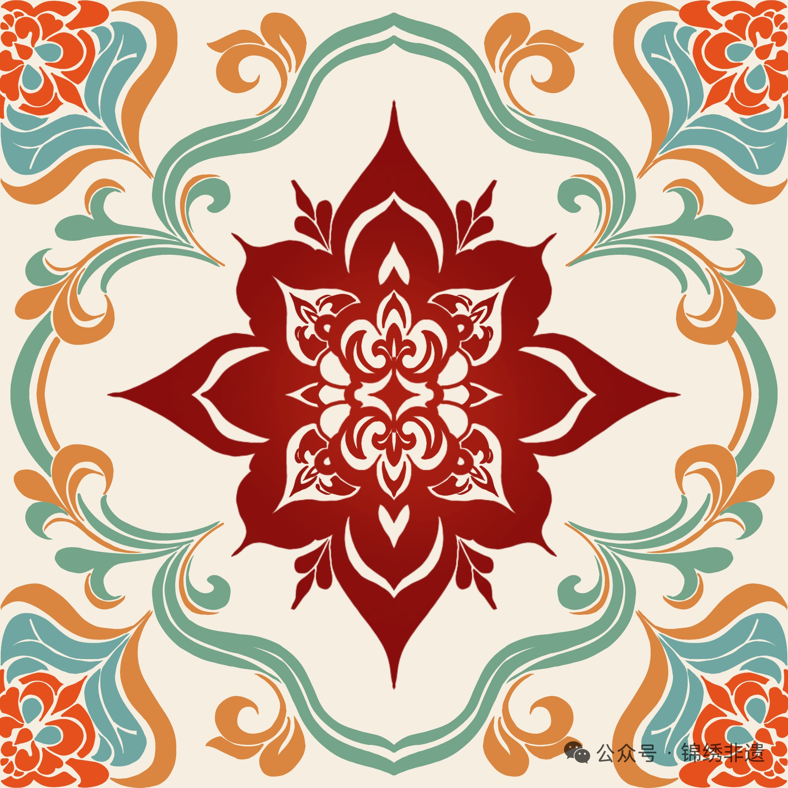

1919年4月1日，当格罗皮乌斯在魏玛创造包豪斯时，这个36岁的年轻人纵有豪情壮志，恐怕也不能想到这家学校将会对百年后的世界产生怎样的影响。不论包豪斯从成立到停办之间的14年里经历过怎样的转变，毋庸置疑的一点是——在经过解构主义等的洗礼后，今日的包豪斯，早已成为了简洁、克制、甚而有点冰冷的代名词，在每个都市的摩天大厦里留下了自己理性、高效的影子。
然而，这一份克制却在漫长的发展发生了一种微妙的异变。在都市节奏日逐加快的当下，包豪斯那种仅强调人的使用需求而非产品艺术性的理念逐渐走向了一个压抑的极端——当城市的空间被钢筋水泥填满，目之所及皆是仰之弥高的摩天大楼，干净利落的线条充斥在视野之中，框住生活日常的同时，也框住了生命恣意的想象。
相应的，在后工业化时代，对工业生活、中产阶级价值观的反抗：从19世纪前半叶菲利斯·巴伦和多罗茜·拉彻继承发扬威廉·莫里斯的雕版印刷以来，一直到60年代开始嬉皮士身披的波西米亚等各种民族风格，我们都可以从那种肆意生长的花纹窥见人类对工业化的反抗、从其中逃离以及对嗣后的新生的渴望。

当时间来到21世纪，社会内卷的压力只能说是有增无减。揆诸当下，无论是“在上学和上班之间选择了上香”的调侃，还是“45度青年——卷又卷不动，躺又躺不平”的自嘲，无一不反映了年轻一代的身心俱疲，不体现着对冰冷的工业化的厌倦。
但是，在这个时代，没有披头士也没有威廉·莫里斯的我们，难道便要屈从于这种疲态，放任自己的生命消磨在条条框框之中吗？答案是否定的，我们依旧有能力来创造出用以对抗这种疲态的旺盛的生命力。这种生命力从何而来？自然是从工业化以前的质朴中寻求一份旺盛的生命力，再对其进行适于当代的改造，以符合于今人跳脱出当下快节奏生活的需求。
从此观点出发，锦绣非遗项目组的美工负责人设计出了一套以忍冬纹和牡丹纹为主体的纹饰。

整个纹路中大量使用了对称、旋转等方法，以敦煌莫高窟中的忍冬纹为基本借鉴，设计出的八角忍冬纹恣意生长，向着四面八方铺张开来，契合其所象征的坚韧的生命力；四角的牡丹纹则是兼采现实牡丹形象与传统唐宋纹样设计而成，不但突出牡丹花朵繁复的特点，同时强调了牡丹叶片的旁逸斜出，以夸张的叶片长度展现了其旺盛的生命力。颜色方面，正中的忍冬纹以单一的大红色为配色，抓人眼球，体现一种如林火一般强大凶猛的生命力与野性，而四周牡丹纹那多样的颜色，则仿佛是以这中心的纹路为来源而肆意生长出的一般，飘逸而不羁。

这款帆布包以传统忍冬纹为设计核心，将千年丝路的艺术韵律融入日常。

这款围巾以源自敦煌石窟的忍冬纹为核心设计元素，将千年丝路文明的艺术基因与现代审美巧妙融合。